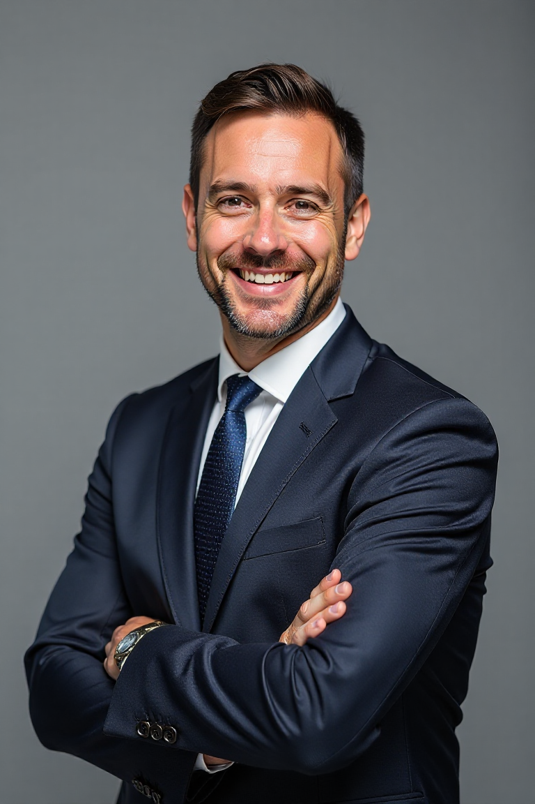

Email: andreas@gmail.com
phone number: 0310554540
Address: 4,Rue de Verdum,71300 MONTCEAU-LES-
MINES
Experienced developer with more than 5 years of experience in full-stack programming. Expert in data analysis and problem solving, with great attention to detail and a strong ability to work under pressure. He also has significant experience in personnel management and project supervision.
October 2019 -present Mid Developer
XYZ Company,Athens,GreeceJan 2017 -Sept 2019 Junior Developer
ABC Company,Athens,GreeceJan 2016 -Sept 2016 Intership
ABC Company,Athens,GreeceSeptember 2016-june MSc in Computing, University of Athens,Greece 2017
Jan 2012-Sept 2016 BSc in Computing, University of Patras,Greece